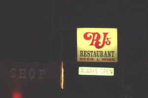

| Day Twenty-Two St. George, UT - Independence, CA Woke up and had a leisurely continental breakfast at the Days Inn. After our second english muffin we noticed that the day was slipping away, so away we went. First out of Utah, then through Arizona, and onto Nevada. In Nevada we detour at LasVegas, and admire the city from afar on our way to the Hoover Dam. Yes, the rumors you have heard are true- the dam is big. Lake Meade was lovely, and so was the quick lunch we had in Boulder City. The picnic lunch was from a deli run from a nice Italian guy from Long Island. We enjoyed our sandwiches at a small city park that was being tended by almost 12 Nevada State Parks employees. We left the dam and drove and drove and drove. Right into Death Valley. Yes, the rumors you have heard about Death Valley are true- the valley is hot. We drove through at sunset, and never once feared for our lives. When we popped out of Death Valley we were in California. We went to a local all night diner in Lone Pine, California, called PJ's. By this time it is dark and late and we are ready to sleep. Once we decided on a quasi-campground we set to the tast of erecting our new tent in the dark. And, to make this task more challenging, we were attacked again by gusts of wind from the mountains. However, this tent made it through the night and so did we. It is a nice new tent and seems so much bigger than our previous dwelling. Corin can stand up in the middle and Ogden practically has her own wing. |
|
| Sqeaking through the North-West corner of Arizona. | Quick, take a picture before we leave AZ. |
| Welcome to Nevada where gambling and prostitution just keep drawin' in the tourists. | Slot machines in a gas station. Does this mean we can pay for gas with quarters? |
| Anna, if you can't find a librarian job after school, Vegas needs you. | Chiarelli's for sandwiches. Boulder City, NV |
| Picnic in the park. | Hoover dam it's big. |
| The dam gift shop. | $1.84 per gallon. Can't be picky in the middle of nowhere, Nevada. |
| Nevada does have some redeeming qualities. | A friendly welcome to Death Valley. |
| Death Valley Dunes. | We're pretty sure this will be the last thermometer shot. If it gets any hotter than this, the camera will melt. |
|  | |
| Death Valley at sunset- the only time to visit. | Ahh, Lone Pine, California. |
| Home | <- Day 21| Day 23-> | |